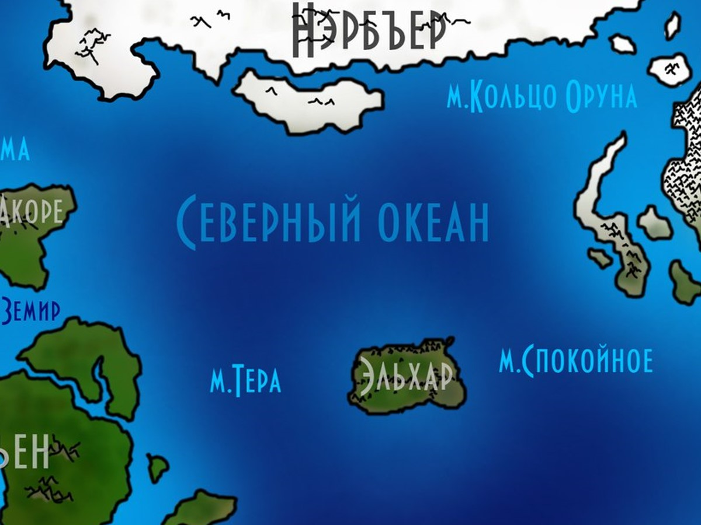
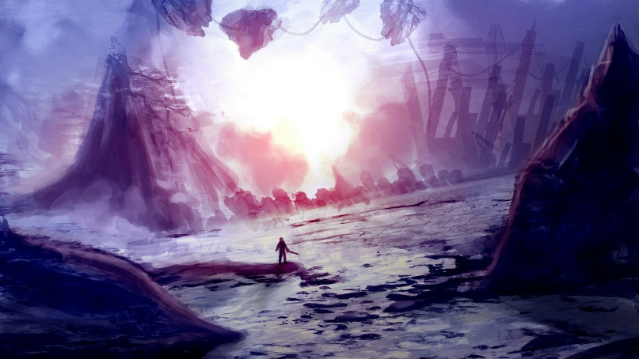
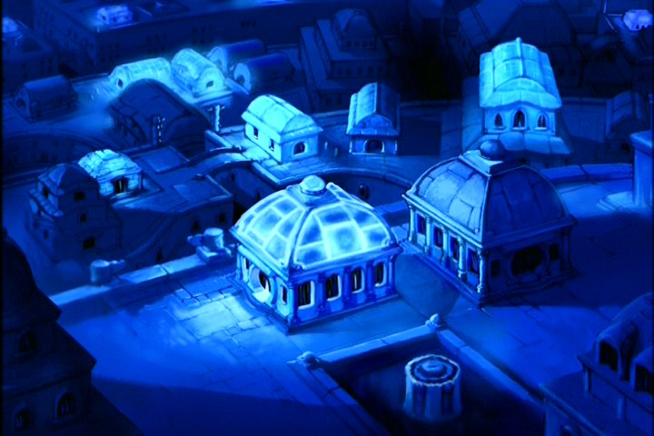

Нэрбъер
Нэрбъер — самый высокий материк Мериона, почти полностью укрытый многокилометровым панцирем льда. Его центральная часть вогнута наподобие тарелки, по краям дрейфуют отколовшиеся льдины, а под ледяной шапкой, между льдом и гранитом, кипят озёра. Здесь царят самые суровые холода и живут ледяные эльфы, давно позабывшие о своих собратьях на Эльхаре.
Карта Нэрбъера
Ледяные горы, каньоны и дрейфующие льдины
images/nerbyer-map.jpgРекомендуемый размер:
1200 × 900 px (4:3)

Составлена по редким рассказам ледяных эльфов и по следам дрейфующих льдин. Там, где линии расходятся со льдом, — верьте льду.

Рельеф
Большая часть рельефа представлена ледяными горами с частыми зигзагообразными каньонами шириной в 4–10 км. Почти всю площадь материка укрывают наслоения льда толщиной в 6–7 км. Сам материк напоминает тарелку с сильно вогнутой центральной частью. На его южной части виднеются непокрытые льдом скалы, выступающие из воды, подобно зубам хищника. По краям часто можно увидеть отколовшиеся и ныне дрейфующие льдины длиной от 1 до 16 км. Материк является самым высоким из всех.
Водные ресурсы
Водные ресурсы представлены наслоениями из замёрзшей пресной и морской воды. Также имеют место озёра с кипящей водой, но они находятся на самом дне — между льдами и гранитной поверхностью материка. Из-за этого частым явлением на Нэрбъере являются землетрясения: ледяная шапка будто плавает по его поверхности. После катаклизмов часто можно наблюдать трещины, из которых фонтанирует вода. Спустя считанные минуты она застывает, создавая чудные узоры из льда.
Полезные ископаемые
Возможно, где-то в почве они и есть, но в покрывающем её толстом слое льда они отсутствуют.
Климат
На Нэрбъере самые суровые холода: температура может опускаться здесь до −80 °С, постоянной же является −30 °С. Часто на материк обрушиваются снежные бури, наметая ещё больший ледяной покров и залечивая трещины на ледяной шапке материка. Здесь часто дуют сильные ветры, изрядно затрудняя передвижение.
Животные и растения
По большей части флора ютится по краям материка, но встречается и на ледяных просторах. Она представлена многообразием морозолюбивых растений, способных расти только при минусовой температуре. Все эти растения являются редкой — кристаллической — формой мхов, лишайников, низких кустарников, некоторые из которых являются плодоносящими. Насчитывается даже один вид ледяного дерева. Оно завораживает своей красотой, особенно когда через его удивительные листья пробивается лучик света: воздух вокруг древа вспыхивает радужными переливами.
На Нэрбъере обитают приспособленные к низким температурам животные и существа, вроде ледяных троллей, великанов, ледяных элементалей и т.п. Обитающих там грифонов ледяные эльфы используют как ездовых животных и в качестве боевой единицы. Здесь обитают такие необычные создания, как ледяные слизни — более их нельзя встретить нигде.
Эти слизни — медлительные хищники. Длиною они в один метр, высотою в полметра. Чаще всего прячутся во всяких трещинах льда, а атакуют жертву энергетическим импульсом. Заряд летит с бешеной скоростью на расстояние до шести метров. Когда импульс касается существа (за исключением нежити), тело жертвы моментально скручивает судорога, и в таком состоянии пребывает около двух-трёх минут. Этого хватает слизню, чтобы полностью окутать собою жертву и начать её разъедать. Но и мясо самих слизней высоко ценится, а их мозговая железа используется для создания посохов-столбняков, которые обладают таким же эффектом паралича ледяного слизня — за счёт его же железы на кончике посоха или жезла.
Обитают на Нэрбъере и ледяные крылатые ящеры, которых ледяные эльфы зачастую стараются приручить, что у них кое-когда получается.

Население и города
В середине Нэрбъера расположена столица ледяных эльфов. Это величественный, сияющий город изо льда. Летающие глыбы льда на ледяных цепях витают там в воздухе, а воздух как будто пропитан магией холода. Вдобавок эти земли пестрят маленькими поселениями ледяных эльфов. С другими народами ледяные эльфы Нэрбъера не контактируют, они даже позабыли о своих собратьях на Эльхаре.
История
С Великого раскола материков пришёл Нэрбъер в движение и сместился на север. Там он постепенно набрал ледяную толщу за счёт бурь и других природных процессов. Некоторые животные, что дрейфовали на материке на север, эволюционировали, иные же вымерли, и их нишу заняли другие создания. А век назад снега Нэрбъера были прибраны к рукам и ногам ледяных эльфов. И на этом его чудная и увлекательная история пока приостанавливается.
Достопримечательности и особенности
Впадина Рьёка — названа в честь Ледяного великана, упавшего в неё и выбравшегося при помощи двух слизней, из-за которых он потерял обе руки. Является глубочайшей точкой на центральной части материка. Её глубина составляет 5739 м.
Мыс рухнувших — является южной точкой Нэрбъера. Здесь ледяные эльфы пытаются оседлать ящеров. Как результат, многие разбиваются, но это всё равно не остужает их стремления к полётам.
География Мериона · Материк Нэрбъер